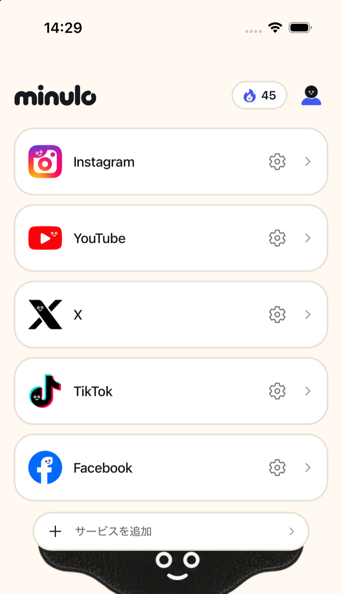
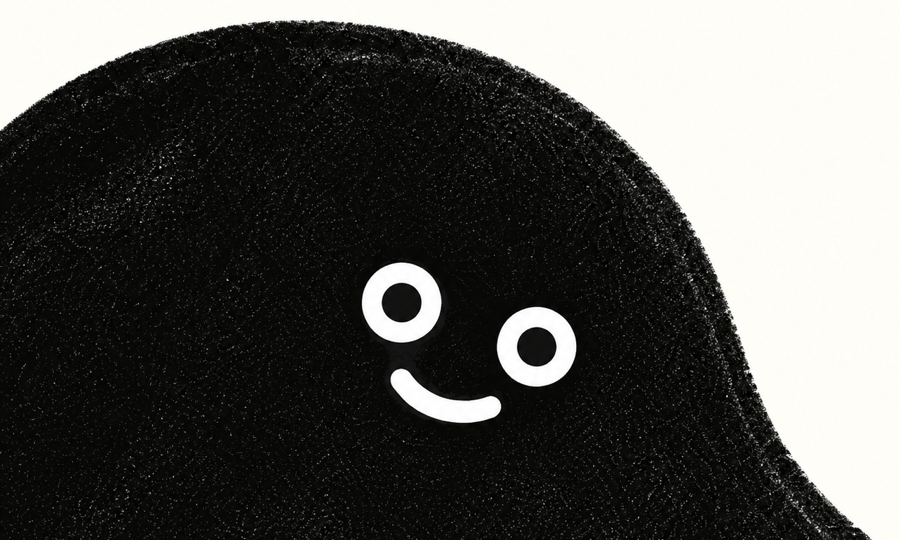

リールも、ショート動画も、おすすめ投稿も。消すのは全部、無料です。
DMと友だちの投稿は、そのまま残ります。


「リールまでは無料、おすすめ投稿からは有料」という線引きにはしていません。おすすめが消えなければ、結局スクロールは止まらないからです。
IDとパスワードは、InstagramやYouTube自身のログイン画面に入力します。minuloが受け取ることも、保存することもありません。
手を入れるのは、minuloの中で開いたページだけです。SafariやChromeで見ているサイトを、こちらの判断で見えなくすることはありません。

リール・発見タブ・おすすめ投稿は、いつも消えます。ストーリーズやDMだけにするかは、自分で切り替えられます。

ホーム画面から本物のアプリを開こうとすると、minuloに戻されます。「消したのに、結局開いてしまう」を防ぎます。

寝る時刻と起きる時刻を決めておくと、その間は自動で止まります。「平日の9〜17時だけ」といった予定も作れます。

引き返した回数と、サービスごとの利用時間。端末の中だけに残り、こちらへ送られることはありません。
有料になるのは、非表示にする機能ではありません。消すものを細かく選ぶこと、自分で開かなくても始まること、解除しにくくすることの3つです。
Safari・Chrome・Edge・Brave・Arc で、フィードとショート動画を非表示にします。見ているページの内容が端末の外へ出ることはありません。
